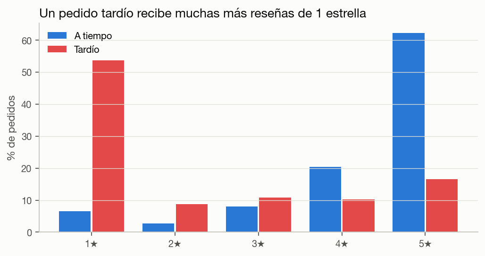
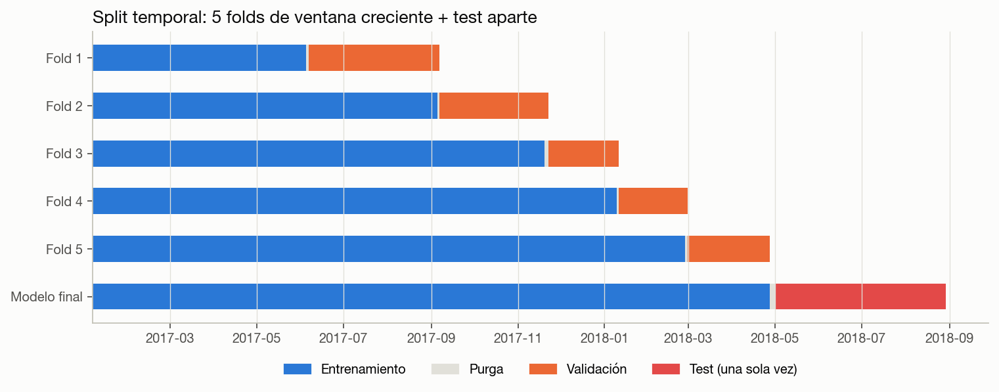
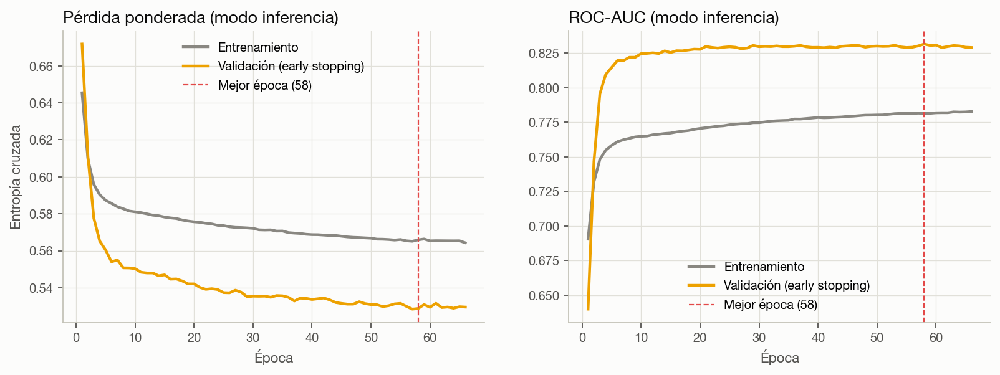
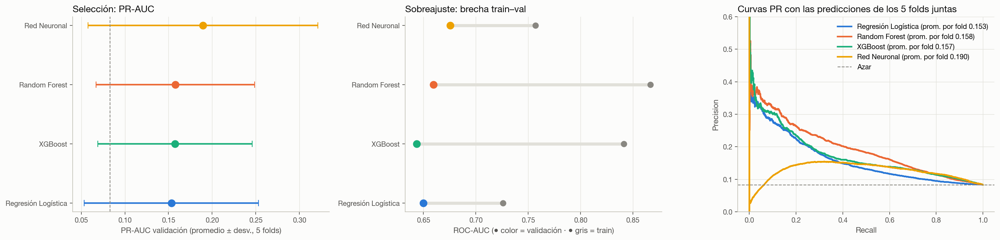
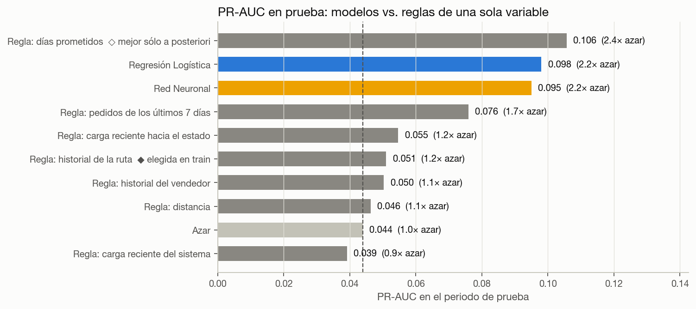

Anticipar el retraso: predicción de entregas tardías en un marketplace de e-commerce con validación temporal sin fuga de información
1. Resumen
Las entregas tardías son poco frecuentes en el marketplace brasileño Olist (6,8 % de 96 201 pedidos entre 2017 y 2018), pero cuestan caro: un pedido tardío tiene 53,1 puntos porcentuales más probabilidad de recibir una reseña de una o dos estrellas (IC 95 %: 51,9–54,3). Este trabajo apoya la decisión diaria del área de operaciones sobre qué pedidos atender de forma proactiva. Planteamos una clasificación binaria que estima, en el momento de la compra, la probabilidad de retraso con 36 variables disponibles en ese instante, incluidas tasas históricas point-in-time del vendedor y de la ruta y la carga reciente del sistema. La evaluación usa un periodo de prueba aislado (mayo–agosto 2018), validación cruzada temporal de cinco folds con purga y la PR-AUC como métrica principal. Comparamos regresión logística, Random Forest y XGBoost con una red neuronal en Keras con detención temprana. Los modelos clásicos empataron en validación y la red fue la mejor (PR-AUC 0,190 frente a 0,153), pero en prueba ambos resultaron equivalentes (0,098 y 0,095, 2,2 veces el azar) y superaron a la regla simple elegida con datos de entrenamiento (0,051). Revisar el 20 % de pedidos más riesgosos anticipa el 39 % de los retrasos. Recomendamos un piloto de alertas proactivas por capacidad con la regresión logística, la red como modelo retador y reentrenamiento mensual.2. Introducción y definición del problema
Empresa y contexto. Olist es un marketplace brasileño que conecta a pequeños vendedores con compradores de todo el país. El vendedor despacha, una transportista entrega y la plataforma promete al cliente una fecha de entrega. Cuando la promesa no se cumple, el costo no es sólo logístico: la reseña pública del pedido se deteriora y, con ella, la reputación del vendedor y la conversión de futuros compradores.
Decisión y destinatario. El proyecto apoya una decisión que se toma todos los días: qué pedidos recién comprados conviene atender de forma proactiva, ya sea avisando al cliente, escalando con el vendedor o la transportista, o ajustando la promesa. Quien la toma es el responsable de operaciones logísticas y de experiencia del cliente, que tiene una capacidad limitada de atención por día.
Cuánto cuesta equivocarse. La Tabla 1 resume, con los datos, el costo de cada tipo de error. Un falso negativo (un retraso que no se anticipó) eleva en 53,1 puntos porcentuales la probabilidad de una reseña de 1–2 estrellas, lo que equivale a unas 593 reseñas negativas adicionales en los cuatro meses del periodo de prueba. Un falso positivo (una alerta sobre un pedido que llegaría a tiempo) cuesta el contacto o la intervención. Como el modelo concentra los retrasos, revisando el 20 % de pedidos de mayor riesgo se necesitan 11,5 alertas por cada retraso anticipado: la acción preventiva conviene si gestionar a tiempo un retraso vale más que ese número de alertas.
| Error | Qué ocurre | Cómo se mide | Estimación con los datos |
|---|---|---|---|
| Falso negativo retraso no anticipado | La reseña se deteriora | Diferencia en reseñas de 1–2★, tardíos vs. puntuales | +53,1 pp (IC 95 %: 51,9–54,3); ≈ 593 reseñas negativas adicionales en los cuatro meses de prueba (36 por cada 1 000 pedidos) |
| Valor comprometido | Pago total de los pedidos tardíos en prueba | R$ 193 632 (ticket promedio R$ 174) | |
| Pérdida del cliente | Recompra en los 180 días siguientes | Sin diferencia significativa (2,6 % vs. 3,2 %; p = 0,09) | |
| Falso positivo alerta innecesaria | Costo de contactar o intervenir un pedido que llegaría a tiempo | Alertas por cada retraso anticipado (revisando el 20 %) | 11,5 alertas: la acción conviene si gestionar un retraso vale más que 11,5 alertas |
Requerimiento de machine learning. Dado un pedido en el instante t de la compra, estimar la probabilidad de que se entregue después de la fecha prometida usando sólo información disponible en t. El objetivo operativo es ordenar los pedidos por riesgo para capturar la mayor fracción de retrasos dentro de una capacidad fija de revisión (k % de los pedidos). El modelo se considera útil si supera al azar y a la mejor regla de una sola variable elegida con datos de entrenamiento.
Contribuciones. (i) Un conjunto de variables construido estrictamente con información del momento de la compra y verificado contra fugas; (ii) un esquema de validación temporal con purga que refleja cuándo se conoce realmente la etiqueta de un pedido; (iii) una comparación controlada de cuatro familias de modelos, cada una con su propia selección de variables y ajuste de hiperparámetros, y contra reglas simples; y (iv) una traducción de los resultados a costos y decisiones operativas.
3. Estado del arte
La predicción de tiempos de entrega se ha estudiado sobre todo como un problema de regresión con información rica en tiempo real. Salari et al. (2022) estiman con modelos de árboles la distribución del tiempo de entrega de los pedidos de JD.com y la usan para fijar la promesa, con un aumento de 6,1 % en ventas. En movilidad, Derrow-Pinion et al. (2021) predicen el tiempo de llegada en Google Maps con redes neuronales de grafos sobre la red vial, y Hu et al. (2022) proponen en Uber un modelo que corrige el residuo de un motor de rutas. Estos trabajos muestran el valor de una buena promesa, pero dependen de tráfico, rutas o escaneos de la transportista que no existen en el momento de la compra. Nuestro problema es distinto: la promesa ya está dada y queremos anticipar, sólo con la información de la compra, si se incumplirá.
Sobre la elección de modelos, Grinsztajn et al. (2022) muestran en 45 conjuntos tabulares que los modelos de árboles siguen superando a las redes profundas en tablas de tamaño mediano, y Shwartz-Ziv y Armon (2022) llegan a una conclusión parecida al comparar arquitecturas recientes contra XGBoost. Por eso comparamos regresión logística, Random Forest y XGBoost contra una red neuronal, sin presuponer que la red gane. Sobre la evaluación, Kaufman et al. (2012) formalizan la fuga de información, Bergmeir y Benítez (2012) y López de Prado (2018) discuten la validación cruzada con datos temporales y la purga entre periodos, Saito y Rehmsmeier (2015) recomiendan la curva precisión-recall para clases desbalanceadas y Elkan (2001) relaciona el umbral de decisión con el costo de cada error. Nuestro aporte combina estas piezas en un caso de marketplace (Tabla 2).
| Trabajo | Publicación / origen | Problema | Enfoque y hallazgo | Relación con este trabajo |
|---|---|---|---|---|
| Salari, Liu y Shen (2022) | MSOM (INFORMS), datos de JD.com | Pronosticar el tiempo de entrega y fijar la promesa en retail en línea | Modelos de árboles que estiman la distribución del tiempo de entrega; la nueva política de promesa eleva las ventas 6,1 % | La promesa es una palanca de negocio. Aquí la promesa ya está dada y se predice su incumplimiento |
| Derrow-Pinion et al. (2021) | CIKM, Google y DeepMind | Tiempo estimado de llegada (ETA) en Google Maps | Redes neuronales de grafos sobre la red vial; hasta 40 % menos errores graves de ETA en ciudades como Sídney | Usan tráfico en tiempo real que este caso no tiene: sólo hay información del momento de la compra |
| Hu et al. (2022) | arXiv, Uber | Corregir el ETA de un motor de rutas | Modelo híbrido que aprende el residuo sobre una predicción base | Partir de una estimación existente; análogo a tratar la fecha prometida como base |
| Grinsztajn, Oyallon y Varoquaux (2022) | NeurIPS, Inria | ¿Árboles o redes en datos tabulares? | 45 conjuntos de datos: los árboles siguen siendo superiores en tablas medianas (~10 000 filas) | Justifica comparar modelos de árboles contra la red y no esperar una ventaja grande de la red |
| Kaufman et al. (2012) | ACM TKDD | Fuga de información en minería de datos | Formalizan la fuga: usar información que no estaría disponible al predecir | Base de las variables point-in-time y de la purga entre periodos |
4. Datos
4.1 Fuente, permiso de uso y periodo
Usamos el Brazilian E-Commerce Public Dataset by Olist (Olist, 2018), publicado en Kaggle con licencia Creative Commons Atribución-NoComercial-CompartirIgual 4.0 (CC BY-NC-SA 4.0), que permite su uso académico citando la fuente. Los datos son reales y están anonimizados: no contienen nombres ni datos que identifiquen a personas. Comprenden 99 441 pedidos de septiembre de 2016 a octubre de 2018 en nueve archivos relacionales: pedidos, ítems, pagos, productos, vendedores, clientes, geolocalización por código postal, reseñas y traducción de categorías. Las tablas se unieron y prepararon con pandas en los notebooks 01 a 04. El conjunto de modelado tiene 96 201 pedidos (enero 2017 – agosto 2018) descritos por 36 variables y la variable objetivo; el diccionario de datos está en el Anexo A.
4.2 Limpieza y variable objetivo
Las reglas de limpieza fueron: eliminar pedidos cancelados o no disponibles (1 234); excluir, por decisión del equipo, pedidos sin fecha de entrega (1 737); y excluir pedidos cuya fecha estimada es posterior a la última entrega registrada, para los cuales aún no se podría conocer el resultado (2). Los pedidos de 2016 son escasos y presentan un hueco entre noviembre y diciembre; se usaron sólo como historial para las variables. No se eliminaron valores atípicos, porque los pedidos extremos (muy pesados o lejanos) son precisamente los de mayor riesgo.
Un pedido es tardío (delivery_late = 1) si se entregó en un día posterior a la fecha estimada. La fecha estimada siempre viene a las
00:00, por lo que la comparación se hace por día: un pedido entregado el mismo día prometido cuenta como a tiempo. Definimos además el instante en
que la etiqueta se vuelve conocida, label_conocida_en = min(entrega, estimada + 1 día): un pedido puntual se sabe al entregarse y uno
tardío en cuanto vence su promesa. Esta columna es la base de las variables históricas y de la purga.
4.3 Análisis exploratorio y estadística descriptiva
La tasa de retraso es de 6,79 % (IC 95 % de Wilson [Wilson, 1927]: 6,63–6,95 %), lo que hace al problema desbalanceado. Los pedidos tardíos promedian 2,27 estrellas frente a 4,29 de los puntuales (Figura 1) y los retrasos llegan en oleadas (Figura 2): la tasa mensual pasó de menos de 3 % a 19 % en marzo de 2018. El pedido típico llega 12 días antes de lo prometido y, cuando un pedido se retrasa, el retraso mediano es de 6 días.


La Tabla 3 describe las variables clave en el periodo de entrenamiento. Como tamaño del efecto reportamos el AUC univariado: la probabilidad de que un pedido tardío tenga un valor mayor que uno puntual (0,5 = no separa). Ninguna variable aislada pasa de 0,67; las que más separan son la carga de pedidos de los últimos siete días, el historial de la ruta y la tasa de retraso reciente hacia el estado del cliente. Los días prometidos casi no separan por sí solos (0,49), porque la promesa ya incorpora un margen: su efecto aparece al combinarlos con otras variables.
| Variable | Mediana a tiempo | Mediana tardío | Media a tiempo | Media tardío | AUC univariado |
|---|---|---|---|---|---|
| Pedidos de los últimos 7 días | 1 161 | 1 632 | 1 285 | 1 592 | 0,665 |
| Historial de retrasos de la ruta | 3,4 % | 4,2 % | 4,0 % | 5,9 % | 0,648 |
| Tasa de retraso hacia el estado, 30 días | 3,6 % | 5,9 % | 6,2 % | 8,7 % | 0,630 |
| Distancia vendedor–cliente (km) | 436,7 | 563,8 | 597,0 | 802,7 | 0,599 |
| Historial de retrasos del vendedor | 3,4 % | 4,2 % | 4,1 % | 5,0 % | 0,590 |
| Flete total (R$) | 16,7 | 18,2 | 22,0 | 25,7 | 0,590 |
| Tasa de retraso del sistema, 30 días | 4,4 % | 5,0 % | 6,8 % | 6,9 % | 0,567 |
| Precio total (R$) | 85,0 | 92,0 | 134,8 | 151,0 | 0,531 |
| Peso promedio del producto (g) | 700,0 | 800,0 | 2 142,9 | 2 526,7 | 0,522 |
| Días de entrega prometidos | 23,6 | 23,5 | 24,5 | 24,1 | 0,493 |
| Plazo mínimo del vendedor para despachar (días) | 6,0 | 6,0 | 6,9 | 6,7 | 0,494 |
La Tabla 4 respalda con intervalos de confianza y pruebas de hipótesis los hallazgos que usamos en el resto del trabajo: el costo del retraso en las reseñas, el cambio de la tasa de retraso entre periodos (deriva), que motiva la validación temporal, y el efecto de la saturación reciente, que motiva las variables de carga. Por cuartil de la tasa reciente hacia el estado, la tasa de retraso sube de forma monótona (4,1 %, 5,0 %, 9,2 %, 12,2 %); con la tasa global del sistema la relación no es monótona, porque el cuartil más alto coincide con la salida de las oleadas. La recompra a 180 días no muestra una diferencia significativa.
| Hallazgo | Estimación | IC 95 % | Prueba | p-valor |
|---|---|---|---|---|
| Tasa de retraso, 2017–2018 | 6,79 % | 6,63–6,95 % | Intervalo de Wilson | — |
| Cambio entre periodos: entrenamiento vs. prueba | 7,64 % vs. 4,40 % | 7,45–7,84 % / 4,15–4,66 % | χ² = 310,3 | < 0,001 |
| Calificación promedio, tardío − a tiempo | -2,02 ★ | -2,06 a -1,98 | t de Welch; Mann-Whitney | < 0,001; < 0,001 |
| Reseñas de 1–2★, tardío − a tiempo | +53,1 pp | 51,9 a 54,3 pp | χ² | < 0,001 |
| Retraso según la carga reciente hacia el estado (cuartil 1 vs. 4) | 4,1 % vs. 12,2 % | 3,8–4,4 % / 11,7–12,7 % | χ² = 1 067 (4 cuartiles) | < 0,001 |
| Recompra a 180 días, primera compra tardía vs. puntual | 2,64 % vs. 3,16 % | 2,17–3,21 % / 3,01–3,31 % | χ² = 2,84 | 0,09 |
5. Metodología
5.1 División en entrenamiento y prueba y validación cruzada
El periodo de prueba son los pedidos comprados a partir del 2018-05-01 (25 350 pedidos, 4.4 % tardíos); no participó
en ninguna decisión y se evaluó una sola vez. El entrenamiento (68 287 pedidos, 7.59 % tardíos) se dividió en seis bloques
cronológicos para formar cinco folds de ventana creciente: el fold k entrena con los bloques 1…k y valida con el bloque k+1 (Tabla 5).
A diferencia de TimeSeriesSplit, aplicamos purga (López de Prado, 2018): un pedido sólo entrena si su etiqueta ya se conocía al
inicio del periodo de validación. Sin ella, los últimos pedidos del entrenamiento tendrían etiquetas que en producción todavía no existirían. Entre
entrenamiento y prueba se purgaron 2 564 pedidos. La imputación (mediana) y el escalado se ajustan dentro de cada fold mediante
Pipeline.
| Fold | Periodo de entrenamiento | Filas | Periodo de validación | Filas | % tardíos train | % tardíos val |
|---|---|---|---|---|---|---|
| 1 | 2017-01-05 – 2017-06-04 | 10 167 | 2017-06-06 – 2017-09-06 | 11 381 | 3,84 | 2,93 |
| 2 | 2017-01-05 – 2017-09-05 | 21 236 | 2017-09-06 – 2017-11-22 | 11 381 | 3,23 | 5,32 |
| 3 | 2017-01-05 – 2017-11-19 | 31 841 | 2017-11-22 – 2018-01-10 | 11 381 | 3,51 | 9,96 |
| 4 | 2017-01-05 – 2018-01-09 | 43 040 | 2018-01-10 – 2018-02-28 | 11 381 | 5,33 | 10,74 |
| 5 | 2017-01-05 – 2018-02-26 | 53 307 | 2018-02-28 – 2018-04-27 | 11 381 | 5,33 | 12,56 |

5.2 Variables
Cada pedido se describe con 36 variables agrupadas en ocho familias: promesa de entrega (días prometidos y plazo del vendedor para despachar), tamaño del pedido, características físicas del producto, forma de pago, geografía (estados, distancia de Haversine entre los centroides de los códigos postales), calendario (día de la semana y franja horaria), historial y carga reciente. El mes de compra se descartó porque, con menos de dos años de datos, identifica episodios concretos que el modelo memorizaría en lugar de estacionalidad.
Las variables de historial (tasa de retraso del vendedor y de la ruta estado→estado) y de carga reciente (tasa de retraso de las entregas conocidas
en los 30 días previos, global y hacia el estado del cliente, y número de pedidos de los últimos siete días) son point-in-time: para un pedido
comprado en t sólo cuentan etiquetas con label_conocida_en < t (Kaufman et al., 2012). Las tasas se suavizan hacia un
prior con m = 20 observaciones; el prior es la tasa global conocida hasta t, no la del periodo de entrenamiento completo, que
filtraría información futura hacia los primeros folds. Verificamos la ausencia de fuga recalculando por fuerza bruta el historial de 300 pedidos
aleatorios. Las variables categóricas se codificaron con one-hot (las 20 categorías más frecuentes en entrenamiento), para un
total de 105 columnas.
5.3 Modelos clásicos, selección de variables e hiperparámetros
Se compararon tres modelos clásicos implementados con scikit-learn (Pedregosa et al., 2011): regresión logística con pesos balanceados (línea base), Random Forest (Breiman, 2001) y XGBoost (Chen y Guestrin, 2016). Para cada uno se siguió la misma secuencia: (1) eliminación recursiva de variables con validación cruzada (RFECV; Guyon et al., 2002), retirando el 10 % de variables menos importantes por ronda según los coeficientes o la importancia propia del modelo; y (2) búsqueda aleatoria de hiperparámetros (Bergstra y Bengio, 2012) sobre las variables elegidas. Ambos pasos usan los mismos cinco folds y la métrica PR-AUC.
5.4 Red neuronal
La red es un perceptrón multicapa en Keras (Chollet et al., 2015): capas densas con activación ReLU, regularización L2 y dropout (Srivastava et al., 2014), salida sigmoide, pérdida de entropía cruzada ponderada por clase y optimizador Adam. Como la red no ofrece una medida de importancia directa, su selección de variables comparó conjuntos candidatos (todas, el RFECV de cada modelo clásico, su unión y su intersección), seguida de una búsqueda aleatoria sobre arquitectura, dropout, L2, tasa de aprendizaje y tamaño de lote. Para evitar el sobreajuste se usó detención temprana (Prechelt, 1998): en cada fold, la pérdida se vigila sobre el 15 % más reciente del entrenamiento (nunca sobre el fold de validación), con paciencia de 8 épocas, un máximo de 100 y recuperación de los mejores pesos. La configuración elegida tiene capas (64, 32, 16), dropout 0,1, L2 0,01, tasa de aprendizaje 0,0003 y lotes de 256, con 35 variables (conjunto RFECV XGBoost). En el ajuste final la mejor época fue la 58 y el entrenamiento se detuvo ocho épocas después (Figura 4).

5.5 Métricas, umbral y regla de selección
Con 6,8 % de positivos, la exactitud no es informativa: predecir siempre «a tiempo» acierta más del 93 %. Las métricas se eligieron por el costo de cada error. Como un falso negativo cuesta mucho más que una alerta (Tabla 1) y la operación tiene capacidad limitada, lo que importa es ordenar bien los pedidos: la métrica principal es el área bajo la curva precisión-recall (PR-AUC, average precision; Saito y Rehmsmeier, 2015), cuyo valor de azar es la tasa de positivos, y la complementamos con la captura de retrasos en el k % de pedidos de mayor riesgo. Reportamos también ROC-AUC, matriz de confusión, precisión, sensibilidad (recall) y F1 de la clase tardía. El sobreajuste se diagnostica con la brecha de ROC-AUC entre entrenamiento y validación, porque el PR-AUC depende de la tasa de positivos y ésta cambia entre periodos. El umbral de cada modelo es el que maximiza el F1 sobre sus predicciones fuera de fold; con probabilidades calibradas, el umbral óptimo por costo sería p* = CFP / (CFP + CFN) (Elkan, 2001). La regla de selección se fijó antes de ver resultados: mayor PR-AUC promedio en validación y, en caso de empate (diferencia menor que 0,005), el modelo más simple (logística, Random Forest, XGBoost, red neuronal).
6. Resultados
6.1 Comparación en validación temporal
La Tabla 6 resume el desempeño en los cinco folds. Los modelos Regresión Logística, Random Forest y XGBoost quedaron a menos de 0,005 de PR-AUC entre sí; por la regla de simplicidad definida antes de ver los resultados, el mejor modelo clásico es Regresión Logística. La red neuronal superó al mejor modelo clásico en validación (PR-AUC 0,190 frente a 0,153). La desviación entre folds es grande para todos los modelos y sigue a la tasa de retraso de cada periodo (Figura 5): los folds con oleadas de retraso son más fáciles de ordenar y el primero, con menos de 3 % de positivos y sólo cinco meses de historia, es el más difícil. La brecha de ROC-AUC entre entrenamiento y validación de la red (0,081) es similar a la de la regresión logística (0,076) y menos de la mitad que la de Random Forest (0,207) y XGBoost (0,198): la detención temprana controló el sobreajuste.
| Modelo | Variables | PR-AUC val | × azar | ROC-AUC val | ROC-AUC train | Brecha ROC | Precisión | Recall | F1 (OOF) |
|---|---|---|---|---|---|---|---|---|---|
| Red Neuronal | 35 | 0,190 ± 0,132 | 2,28 | 0,675 | 0,757 | 0,081 | 0,190 | 0,466 | 0,227 |
| Random Forest | 105 | 0,158 ± 0,091 | 1,90 | 0,660 | 0,867 | 0,207 | 0,160 | 0,359 | 0,270 |
| XGBoost | 35 | 0,157 ± 0,088 | 1,90 | 0,644 | 0,841 | 0,198 | 0,166 | 0,309 | 0,231 |
| Regresión Logística | 65 | 0,153 ± 0,100 | 1,85 | 0,650 | 0,726 | 0,076 | 0,174 | 0,256 | 0,227 |

| Modelo | Variables | Hiperparámetros elegidos |
|---|---|---|
| Regresión Logística | 65 | C = 0,001007; penalty = l2; solver = liblinear |
| Random Forest | 105 | n_estimators = 200; min_samples_leaf = 100; max_samples = 0,8; max_features = sqrt; max_depth = 12; class_weight = balanced_subsample |
| XGBoost | 35 | colsample_bytree = 0,5; learning_rate = 0,07723; max_depth = 3; min_child_weight = 20; n_estimators = 200; reg_lambda = 0,1914; scale_pos_weight = 6; subsample = 0,6 |
| Red Neuronal | 35 (conjunto: RFECV XGBoost) | capas = (64, 32, 16); dropout = 0,1; l2 = 0,01; lr = 0,0003; batch = 256 |
6.2 Prueba final
El periodo de prueba se abrió una sola vez para el mejor modelo clásico y la red neuronal (Tabla 8). En prueba ambos modelos resultaron prácticamente equivalentes (PR-AUC 0,098 y 0,095; ROC-AUC 0,716 y 0,729): la ventaja de la red en validación no se sostuvo en el futuro. Los valores absolutos son menores que en validación porque el periodo de prueba tiene menos retrasos (4,4 %); la mejora relativa frente al azar es de 2,2 veces para Regresión Logística y 2,2 para la red. El umbral fijo de probabilidad elegido en validación no se transfirió bien: en prueba marca el 56 % de los pedidos, con recall alto (86 %) pero precisión baja (7 %) (Figura 6). Esto ocurre porque la tasa de retraso bajó y porque el umbral se eligió sobre predicciones de cinco modelos de fold con escalas de probabilidad distintas. La PR-AUC y la operación por capacidad son robustas a esa deriva.
| Modelo | PR-AUC CV | PR-AUC prueba | × azar | ROC-AUC | Precisión | Recall | F1 | Umbral |
|---|---|---|---|---|---|---|---|---|
| Regresión Logística | 0,153 | 0,098 | 2,23 | 0,716 | 0,068 | 0,865 | 0,126 | 0,60 |
| Red Neuronal | 0,190 | 0,095 | 2,16 | 0,729 | 0,068 | 0,871 | 0,126 | 0,61 |

6.3 Operación por capacidad y punto de equilibrio
Operar por capacidad significa revisar cada día el k % de pedidos con mayor riesgo, en lugar de usar un umbral de probabilidad. Revisando el 10 % se anticipa el 25 % de los retrasos con unas 21 alertas diarias; revisando el 20 %, el 39 % con unas 42 (Tabla 9). La última columna da el punto de equilibrio: cuántas alertas cuesta cada retraso anticipado y, por tanto, cuántas veces debe valer gestionar un retraso frente al costo de una alerta para que la acción convenga.
| Pedidos revisados | Alertas | Alertas / día | Tardíos anticipados (Regresión Logística) | Precisión | Lift | Alertas por retraso anticipado | Captura de la red |
|---|---|---|---|---|---|---|---|
| 5 % | 1 268 | 10 | 174 (15,6 %) | 13,7 % | 3,12 | 7,3 | 14,0 % |
| 10 % | 2 535 | 21 | 278 (24,9 %) | 11,0 % | 2,49 | 9,1 | 23,8 % |
| 20 % | 5 070 | 42 | 439 (39,4 %) | 8,7 % | 1,97 | 11,5 | 43,5 % |
| 30 % | 7 605 | 63 | 625 (56,1 %) | 8,2 % | 1,87 | 12,2 | 62,1 % |
6.4 Comparación contra la solución más simple
Para saber si hace falta un modelo, lo comparamos con reglas de una sola variable que un analista podría usar sin machine learning (Tabla 10, Figura 7). Para que la comparación sea justa, la regla se eligió igual que el modelo: con el periodo de entrenamiento. La regla elegida (◆ historial de la ruta) obtiene en prueba una PR-AUC de 0,051, apenas 1,2 veces el azar, frente a 0,098 de la regresión logística: varias señales que funcionaban en entrenamiento se desploman en el periodo de prueba, mientras que los modelos multivariables conservan su ventaja. Por honestidad reportamos también un resultado a posteriori: la regla de días prometidos (◇) alcanza en prueba una PR-AUC de 0,106, mayor que la de los modelos, aunque con menor ROC-AUC (0,674 frente a 0,716) y una captura similar en el 20 % de mayor riesgo. En entrenamiento esa regla tenía una PR-AUC de 0,074 y no se habría elegido: la importancia de la promesa de entrega cambió en el periodo de prueba, lo que refuerza la necesidad de reentrenar y monitorear el modelo.
| Método | PR-AUC train | PR-AUC prueba | × azar | ROC-AUC | Captura top 20 % |
|---|---|---|---|---|---|
| Regla: días prometidos ◇ | 0,074 | 0,106 | 2,40 | 0,674 | 39,0 % |
| Regresión Logística | — | 0,098 | 2,23 | 0,716 | 39,4 % |
| Red Neuronal | — | 0,095 | 2,16 | 0,729 | 43,5 % |
| Regla: pedidos de los últimos 7 días | 0,131 | 0,076 | 1,73 | 0,674 | 40,4 % |
| Regla: carga reciente hacia el estado | 0,111 | 0,055 | 1,24 | 0,502 | 22,2 % |
| Regla: historial de la ruta ◆ | 0,140 | 0,051 | 1,16 | 0,514 | 26,5 % |
| Regla: historial del vendedor | 0,098 | 0,050 | 1,14 | 0,520 | 22,2 % |
| Regla: distancia | 0,105 | 0,046 | 1,05 | 0,474 | 23,9 % |
| Azar | — | 0,044 | 1,00 | 0,500 | 20,0 % |
| Regla: carga reciente del sistema | 0,082 | 0,039 | 0,89 | 0,449 | 14,4 % |

6.5 Variables relevantes
Las variables con mayor peso en Regresión Logística son: días de entrega prometidos (10,2 %), tasa de retraso del sistema (30 días) (9,2 %), pedidos de los últimos 7 días (8,1 %), vendedor y cliente en el mismo estado (4,7 %), entregas del sistema (30 días) (4,1 %). El patrón es coherente con el análisis exploratorio: la promesa de entrega, la saturación reciente del sistema y el historial de la ruta y del vendedor explican la mayor parte del riesgo.

7. Retos, límites y conclusión
7.1 Qué no se puede concluir con estos datos
- Causalidad en las reseñas. La caída de calificación de los pedidos tardíos es una asociación; parte podría deberse a factores que acompañan al retraso (por ejemplo, vendedores con peor servicio).
- Pérdida de clientes. No encontramos evidencia de que el retraso reduzca la recompra a 180 días (p = 0,09); con una recompra general cercana al 3 %, estos datos no tienen potencia para medir ese efecto.
- Superioridad de la red. La ventaja de la red en validación no se sostuvo en prueba: no podemos afirmar que sea mejor que la regresión logística.
- Efecto de las alertas. El modelo anticipa retrasos, pero no sabemos cuántas reseñas negativas evitaría una alerta; eso sólo se mide con un experimento controlado.
- Generalización. Los resultados corresponden a Olist en Brasil entre 2017 y 2018; no se pueden extrapolar a otros mercados o periodos sin validarlos.
7.2 Riesgos de usar el modelo
- Deriva temporal. La tasa de retraso cambió de forma significativa entre periodos (χ² = 310, p < 0,001) y varía de 1 % a 19 % entre meses (Gama et al., 2014); la importancia de las variables también cambió (sección 6.4).
- Umbral frágil. Un umbral fijo de probabilidad marcó el 56 % de los pedidos en prueba; recomendamos fijar la capacidad de revisión o recalibrar periódicamente.
- Retroalimentación. Si las alertas evitan retrasos, las etiquetas futuras dejarán de reflejar el riesgo original; hay que registrar qué pedidos se intervinieron para reentrenar sin sesgo.
- Trato desigual por región. El riesgo se concentra en algunos estados (Alagoas 25 %, Maranhão 19 %, Ceará 17 % frente a São Paulo 4,5 % en entrenamiento). Las alertas deben mejorar el servicio en esas regiones, no restringir la venta ni encarecer el envío, y conviene monitorear el desempeño por estado.
- Optimismo del CV. Los mismos folds eligieron variables, hiperparámetros y umbral, por lo que las métricas de validación son optimistas; por eso reportamos un periodo de prueba aislado. En iteraciones anteriores del proyecto se consultó el periodo de prueba; la versión final fijó todas las decisiones con validación cruzada antes de evaluarlo.
- Variables ausentes. No hay datos de transportista, clima, huelgas o festivos, que explican oleadas como la de marzo de 2018.
7.3 Recomendación
Recomendamos lanzar un piloto de alertas proactivas por capacidad con la regresión logística: revisar cada día el 10–20 % de pedidos con mayor riesgo (unas 21–42 alertas diarias con el volumen del periodo de prueba), lo que anticipa el 25–39 % de los retrasos. Para acciones baratas, como avisar al cliente, conviene el extremo alto de ese rango; para intervenciones costosas, el bajo. La red neuronal debe quedar como modelo retador (champion–challenger), con reentrenamiento mensual con el mismo esquema temporal y monitoreo de la PR-AUC frente al azar. El piloto debe medirse con un experimento A/B cuyo indicador sea la proporción de reseñas de 1–2★ en pedidos tardíos.
7.4 Siguientes pasos
(i) Incorporar fuentes exógenas (transportista, clima, calendario de festivos); (ii) calibrar las probabilidades para fijar umbrales por costo; (iii) modelar también los días de retraso; y (iv) validar el impacto con el experimento del piloto.
7.5 Conclusión
Con información disponible al momento de la compra es posible anticipar una parte relevante de las entregas tardías de Olist: los modelos ordenan el riesgo 2,2 veces mejor que el azar en meses que nunca vieron y superan a la regla simple que se habría elegido sin machine learning. El aporte principal no es la complejidad del modelo, sino el diseño de evaluación: variables point-in-time, validación temporal con purga, una regla de selección fijada de antemano y una lectura de los resultados en términos de costo y capacidad.
Reproducibilidad. El código está en https://github.com/fabiolajrzflo/proyecto_final_equipo_3, organizado en notebooks secuenciales
(01_limpieza a 07_estadistica_y_costo_del_error) y módulos en src/; todas las cifras de este documento se
generan automáticamente a partir de sus salidas.
8. Referencias
Bergmeir, C., y Benítez, J. M. (2012). On the use of cross-validation for time series predictor evaluation. Information Sciences, 191, 192–213. https://doi.org/10.1016/j.ins.2011.12.028
Bergstra, J., y Bengio, Y. (2012). Random search for hyper-parameter optimization. Journal of Machine Learning Research, 13, 281–305. https://jmlr.org/papers/v13/bergstra12a.html
Breiman, L. (2001). Random forests. Machine Learning, 45(1), 5–32. https://doi.org/10.1023/A:1010933404324
Chen, T., y Guestrin, C. (2016). XGBoost: A scalable tree boosting system. En Proceedings of the 22nd ACM SIGKDD International Conference on Knowledge Discovery and Data Mining (pp. 785–794). Association for Computing Machinery. https://doi.org/10.1145/2939672.2939785
Chollet, F., et al. (2015). Keras [Software]. https://keras.io
Derrow-Pinion, A., She, J., Wong, D., Lange, O., Hester, T., Perez, L., Nunkesser, M., Lee, S., Guo, X., Wiltshire, B., Battaglia, P. W., Gupta, V., Li, A., Xu, Z., Sanchez-Gonzalez, A., Li, Y., y Veličković, P. (2021). ETA prediction with graph neural networks in Google Maps. En Proceedings of the 30th ACM International Conference on Information & Knowledge Management (pp. 3767–3776). Association for Computing Machinery. https://doi.org/10.1145/3459637.3481916
Elkan, C. (2001). The foundations of cost-sensitive learning. En Proceedings of the Seventeenth International Joint Conference on Artificial Intelligence (pp. 973–977). Morgan Kaufmann.
Gama, J., Žliobaitė, I., Bifet, A., Pechenizkiy, M., y Bouchachia, A. (2014). A survey on concept drift adaptation. ACM Computing Surveys, 46(4), Artículo 44. https://doi.org/10.1145/2523813
Grinsztajn, L., Oyallon, E., y Varoquaux, G. (2022). Why do tree-based models still outperform deep learning on typical tabular data? En Advances in Neural Information Processing Systems 35: Datasets and Benchmarks Track. https://doi.org/10.48550/arXiv.2207.08815
Guyon, I., Weston, J., Barnhill, S., y Vapnik, V. (2002). Gene selection for cancer classification using support vector machines. Machine Learning, 46(1–3), 389–422. https://doi.org/10.1023/A:1012487302797
Hu, X., Binaykiya, T., Frank, E., y Cirit, O. (2022). DeeprETA: An ETA post-processing system at scale (arXiv:2206.02127). arXiv. https://doi.org/10.48550/arXiv.2206.02127
Kaufman, S., Rosset, S., Perlich, C., y Stitelman, O. (2012). Leakage in data mining: Formulation, detection, and avoidance. ACM Transactions on Knowledge Discovery from Data, 6(4), 1–21. https://doi.org/10.1145/2382577.2382579
López de Prado, M. (2018). Advances in financial machine learning. Wiley.
Olist. (2018). Brazilian e-commerce public dataset by Olist [Conjunto de datos]. Kaggle. https://www.kaggle.com/datasets/olistbr/brazilian-ecommerce
Pedregosa, F., Varoquaux, G., Gramfort, A., Michel, V., Thirion, B., Grisel, O., Blondel, M., Prettenhofer, P., Weiss, R., Dubourg, V., Vanderplas, J., Passos, A., Cournapeau, D., Brucher, M., Perrot, M., y Duchesnay, É. (2011). Scikit-learn: Machine learning in Python. Journal of Machine Learning Research, 12, 2825–2830. https://jmlr.org/papers/v12/pedregosa11a.html
Prechelt, L. (1998). Early stopping — But when? En G. B. Orr y K.-R. Müller (Eds.), Neural networks: Tricks of the trade (pp. 55–69). Springer. https://doi.org/10.1007/3-540-49430-8_3
Saito, T., y Rehmsmeier, M. (2015). The precision-recall plot is more informative than the ROC plot when evaluating binary classifiers on imbalanced datasets. PLOS ONE, 10(3), Artículo e0118432. https://doi.org/10.1371/journal.pone.0118432
Salari, N., Liu, S., y Shen, Z.-J. M. (2022). Real-time delivery time forecasting and promising in online retailing: When will your package arrive? Manufacturing & Service Operations Management, 24(3), 1421–1436. https://doi.org/10.1287/msom.2022.1081
Shwartz-Ziv, R., y Armon, A. (2022). Tabular data: Deep learning is not all you need. Information Fusion, 81, 84–90. https://doi.org/10.1016/j.inffus.2021.11.011
Srivastava, N., Hinton, G., Krizhevsky, A., Sutskever, I., y Salakhutdinov, R. (2014). Dropout: A simple way to prevent neural networks from overfitting. Journal of Machine Learning Research, 15, 1929–1958. https://jmlr.org/papers/v15/srivastava14a.html
Wilson, E. B. (1927). Probable inference, the law of succession, and statistical inference. Journal of the American Statistical Association, 22(158), 209–212. https://doi.org/10.1080/01621459.1927.10502953
Anexo A. Diccionario de datos
Variables del conjunto de modelado (datos/processed/dataset_pedidos.parquet), un registro por pedido. Los identificadores
(order_id, customer_id, main_seller_id, ruta, código postal) y las fechas no entran al modelo.
Las variables categóricas se codifican con one-hot antes de entrenar.
| Variable | Tipo | Descripción |
|---|---|---|
| delivery_late | binaria (objetivo) | 1 si el pedido se entregó en un día posterior a la fecha estimada; 0 si llegó ese día o antes. |
| label_conocida_en | fecha (no entra al modelo) | Instante en que se conoce el resultado: min(entrega, fecha estimada + 1 día). Base de las variables históricas y de la purga. |
| purchase_weekday | categórica | Día de la semana de la compra (0 = lunes … 6 = domingo). |
| franja_horaria | categórica | Franja de la hora de compra: madrugada (0–5 h), mañana (6–11), tarde (12–17), noche (18–23). |
| estimated_delivery_days | numérica | Días entre la compra y la fecha de entrega prometida. |
| customer_state | categórica | Estado del cliente. |
| seller_state | categórica | Estado del vendedor principal (primer ítem del pedido). |
| n_seller_states | numérica | Número de estados distintos de los vendedores del pedido. |
| same_state | binaria | 1 si vendedor principal y cliente están en el mismo estado. |
| avg_distance_km, max_distance_km | numérica | Distancia de Haversine media y máxima entre vendedor y cliente, con el centroide de cada código postal. |
| total_items, total_products, total_sellers | numérica | Número de ítems, de productos distintos y de vendedores distintos del pedido. |
| unique_product_categories | numérica | Número de categorías de producto distintas. |
| main_category | categórica | Categoría del primer producto del pedido. |
| total_price, total_freight | numérica | Suma del precio y del flete de los ítems (R$). |
| freight_ratio | numérica | Flete total / precio total. |
| avg_product_weight, max_product_weight | numérica | Peso medio y máximo de los productos (g). |
| avg_product_length, avg_product_height, avg_product_width | numérica | Dimensiones medias de los productos (cm). |
| avg_dias_limite_envio, min_dias_limite_envio | numérica | Días entre la compra y la fecha límite para que el vendedor despache (media y mínimo de los ítems). |
| total_payment | numérica | Suma de los pagos del pedido (R$). |
| max_installments | numérica | Máximo número de mensualidades. |
| payment_types | numérica | Número de medios de pago distintos. |
| main_payment_type | categórica | Medio de pago más usado en el pedido. |
| seller_late_rate, seller_n_prev | numérica | Tasa de retraso suavizada (m = 20) y número de pedidos previos del vendedor, sólo con resultados conocidos antes de la compra. |
| ruta_late_rate, ruta_n_prev | numérica | Igual que la anterior, para la ruta estado del vendedor → estado del cliente. |
| global_late_30d, global_n_30d | numérica | Tasa de retraso suavizada y número de entregas cuyo resultado se conoció en los 30 días previos a la compra (todo el sistema). |
| estado_late_30d | numérica | Tasa de retraso suavizada de las entregas hacia el estado del cliente conocidas en los 30 días previos. |
| pedidos_ult_7d | numérica | Número de compras registradas en la plataforma en los 7 días previos (incluye canceladas). |